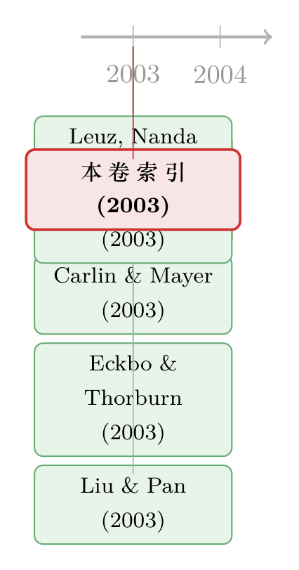

卷末那一页：从一份「索引」里，读出 2003 年的金融学在想什么
本文读的是 Journal of Financial Economics 第 69 卷 (2003) 的卷末「索引」(Index, JFE 69(2003) 529)：一页没有作者、没有摘要、没有数据、连页码都只剩一个数字的目录。可恰恰是这页「谁都不会读」的纸，是一整个领域在某一年里留下的唯一一张集体合影——它不告诉你任何一篇论文「说了什么」，却悄悄告诉了你，这个学科那一年「在乎什么」。
1 一份没人会读的「论文」
先说清楚：摆在我面前的这份「论文」，根本不是论文。
它的标题叫 Index，作者一栏写着 Unknown，正文是十六行人名和页码，外加一串以 seeDianeDelGuercio、seeSandeepDahiya 开头的交叉索引。它是 JFE 第 69 卷的最后一页——排在所有正文之后、装订线最里侧的那一页。订阅这本期刊的人,翻到这里时,基本都已经合上了刊物。
把这样一页东西拿来「评述」，乍看是个玩笑。这里没有识别策略，没有数据，没有稳健性检验，连一个能报告的系数都欠奉。可如果你愿意在它面前多站一会儿，会慢慢意识到：一份索引，是一个学科最诚实、也最容易被忽略的一种自我记录。它和这个博客里读过的另外几页「非论文」是一类东西——比如那封给顶刊投稿明码标价的涨价通知，或者那一天 JFE 给每篇文章发的「身份证」DOI。它们都不研究市场，它们本身就是学术市场运转时落下的指纹。
那么,一份索引到底能「读」出什么?
2 把目录当成一张「集体合影」
单看一篇论文，你能知道它的贡献、它的漏洞、它的野心。但你永远无法从一篇论文里知道一件事：在它被写出来的那一年，整个领域有多少人，正和它想着同一件事。
这正是索引能给的东西。一卷期刊的目录，是一次没有受访者知情的「主题普查」——它把同一年里通过了同样审稿门槛、被同一群编辑认为「值得占用顶刊版面」的工作，全部摊在同一页纸上。哪个主题占了三篇、四篇，哪个主题只孤零零一篇，这是任何单篇论文都给不出的信息：相对权重。
这其实和金融学自己最爱讲的那套逻辑同构。我们相信价格里藏着信息，是因为价格是无数人用真金白银「投票」出来的加总；同样地，一卷期刊的目录里也藏着信息，因为它是一个领域用最稀缺的资源——顶刊版面——投票出来的加总。从这个意义上说，读索引，是一次对学科的显示偏好 (revealed preference)分析：不要问研究者们嘴上说自己关心什么，去看他们把版面花在了哪里。
带着这把尺子，我们来给 2003 年的 JFE 第 69 卷做一次普查。
3 2003 年，金融学在想什么
这一卷一共十六篇文章。把它们按主题归一下堆，那张「合影」的构图立刻就清楚了。
最大的一团人，站在「公司治理与控制权市场」这边。 这里有 Harford (2003) 研究收购要约如何改变目标公司董事的财富与席位；有 Del Guercio、Dann 与 Partch (2003) 解剖封闭式基金的董事会；有 Chidambaran 与 Prabhala (2003) 把高管期权重定价、内部治理与管理层更替绑在一起；有 Eckbo 与 Thorburn (2003) 在自动破产拍卖里寻找对 CEO 的纪律约束；有 Smart 与 Zutter (2003) 把「控制权」当成新股折价发行的动机。再算上两篇背靠背、主题几乎撞车的并购「分手费」研究——Officer (2003) 和 Bates 与 Lemmon (2003)——这一卷里和「谁控制公司、控制权值多少钱、控制权如何转手」直接相关的，足足有七篇，接近半壁江山。
这不是巧合。这一卷的稿子，大多是在 2001–2002 年间写就、修订、定稿的——正是安然 (Enron)、世通 (WorldCom) 接连爆雷、萨班斯-奥克斯利法案 (Sarbanes–Oxley Act) 仓促落地的那两年。一个领域会写什么，从来不只由「学术内部的好奇心」决定，也由窗外正在燃烧的东西决定。索引把这种「时代体温」原封不动地记了下来。
第二团人，站得离「法律、制度与金融发展」更近。 这一卷的开篇之作，是 Rajan 与 Zingales (2003) 那篇后来被引爆的 The great reversals——用二十世纪的政治变迁，解释一国金融市场为何会前进又倒退；卷末压轴，则是 Leuz、Nanda 与 Wysocki (2003) 那篇同样成为经典的跨国比较——盈余管理 (earnings management) 如何随投资者保护强弱而系统性地不同；夹在中间还有 Carlin 与 Mayer (2003) 的「金融、投资与增长」。一头一尾两篇旗舰，加上中间一篇，构成了这一卷的「比较金融」骨架。把这条线往后延，你会看到《法律是行李，风土是地基》、《一只苍蝇如何掐住非洲人的钱包》这些更晚近的「金融起源」研究——它们都站在 Rajan–Zingales 这一卷开篇所点的火上。
剩下零散的几位，分属市场微观结构与资产定价。 Naik 与 Yadav (2003) 问做市商到底是「逐只股票」还是「按组合」管理库存——这个「逐只 vs. 组合」的问题，二十年后仍然鲜活，可参见《做市商的「一本账」：多资产做市》；Chakravarty 与 Li (2003) 盯着期货市场里「双重身份」交易者的自营盘；Liu 与 Pan (2003) 的 Dynamic derivative strategies 则把衍生品正式请进了动态组合选择，是这一卷里少有的纯理论亮色；Ali、Hwang 与 Trombley (2003) 用「套利风险」去解释账面市值比异象 (book-to-market anomaly)。再加一篇 Altınkılıç 与 Hansen (2003) 的增发折价研究——拼图就齐了。
一份目录，就这样把 2003 年金融学的注意力分布，诚实地画成了一张直方图：治理与控制权独大，比较金融压阵，微观结构与资产定价点缀其间。
4 唯一的「数据」：页码
到这里你可能会反驳：这些都是定性的归类，索引里有没有什么是能算的？
有。而且只有一样——页码。
这是这份「论文」给出的全部定量信息：每篇文章的起始页。第一篇 Rajan–Zingales 从第 5 页起，第二篇 Harford 从第 51 页起，依此类推，直到第十六篇 Leuz–Nanda–Wysocki 从第 505 页起；而整卷在第 529 页（也就是索引这一页）收尾。
这串看似无用的数字，其实悄悄编码了一个变量：每篇文章的长度。第 \(i\) 篇的页数，约等于下一篇的起始页减去它自己的起始页，即
$$ \text{length}_i \;\approx\; p_{i+1} - p_i . $$
把这把尺子量一遍，会得到一些意外有趣的对比。开篇的 Rajan–Zingales 占了约 46 页（5–50），是全卷最长、也最「重」的一篇——顶刊往往把这种位置和篇幅，留给它认为分量最足的文章。而最短的，是 Ali–Hwang–Trombley 那篇关于套利风险的研究，只有约 20 页（355–374）——它本就更接近一篇精炼的实证「短文」。压轴的 Leuz 等人那篇影响深远的跨国比较，篇幅其实并不算长，约 23 页（505–527）。
别小看这个「页码即长度」的小把戏。它正是文献计量学最朴素的一种思路：当你拿不到摘要、拿不到全文、甚至拿不到引用数时，版面的分配本身就是一种被显示出来的判断。一篇被给了 46 页的文章，和一篇被压到 20 页的文章，编辑部对它们的「期待权重」是不一样的。索引把这份期待，用最不动声色的方式记了账。
当然，必须诚实：页码长度是一个噪声极大的代理变量，受排版、附录、数据表多寡的影响，远谈不上严谨。但这恰恰是读索引的乐趣所在——当一份文本几乎不给你任何数据时，你会被迫去珍惜它仅有的那一点点。
5 文献脉络
这份索引特殊在：它自己就是一段文献脉络的横截面。它没有「早期工作 → 关键论文 → 本文」的纵向时间轴，而是把同一年里的十六个研究方向，压成了一张同时曝光的合影。
但如果我们顺着这一卷里最有生命力的两条线往后看，纵向的脉络也并非无迹可寻。一条线，从这一卷开篇的 Rajan 与 Zingales (2003) 出发，把「金融发展取决于政治与制度」这个命题，一路递给后来整片「法律与金融」「金融起源」的研究；另一条线，从卷末 Leuz、Nanda 与 Wysocki (2003) 出发，把「投资者保护塑造企业行为」这件事，递给后来无数跨国治理与盈余质量的研究。而像 Officer (2003) 与 Bates–Lemmon (2003) 这对「分手费」研究，则在二十年后仍被人反复掂量——它们究竟是「锁门」还是「关灯」，至今没有定论（关于这场公案，可参见《终止费到底是「锁门」还是「关灯」？》）。

换句话说，这一卷不是脉络上的一个「点」，而是一截被同时点亮的「切片」——它日后会分叉成好几条独立的河流。
6 评论与延伸（Q&A + 研究方向）
(a) 几个可能的疑问
Q：把一份目录当「研究对象」，是不是太牵强了？它毕竟不含任何新知识。
它确实不含新知识，但它含元信息 (meta-information)。任何单篇论文都无法回答「这一年这个领域整体在关注什么、版面如何分配」，而索引能。它的价值不在「内容」，而在「加总」——和价格之于个体交易者是一个道理。
Q：从「治理与并购占了七篇」就推断「2003 年金融学最在乎治理」，会不会以偏概全？
会，而且必须警惕。单独一卷（n=16）是极小样本，主题分布很可能只是这三期编辑的口味、或某次专题征稿的产物，而非整个领域的均值。严谨的做法是把 JFE 乃至 JF、RFS 在 2000–2005 年的所有卷的目录都扒下来求平均，再下结论。本文做的只是「一卷的描述性观察」，不是「领域的因果断言」。
Q：「页码即长度」这个代理变量，可信吗？
只能算粗糙。它会被附录、数据表、参考文献的长短严重污染，也无法区分「内容厚重」与「排版松散」。它能支撑的，至多是「编辑部给开篇旗舰文留了最大版面」这种弱观察，撑不起任何强结论。把它当趣味，不要当证据。
Q：为什么开篇是 Rajan–Zingales，压轴是 Leuz 等人？顺序有讲究吗？
JFE 的排序大体按页码、也即按各期的组稿顺序，并非严格的「重要性排名」。但顶刊确实倾向于把分量足、议题大的文章放在卷首或期首的显眼位置。把全卷最长、日后引用最高的 Rajan–Zingales 放在第 5 页开篇，很难说完全是偶然。
Q：这和这个博客里读过的另外几篇「非论文」，是同一类东西吗？
是。那封涨价通知、那页 DOI 公告、那篇没有数据的主编来信，和这页索引一样，都不是「研究」，而是学术生产过程本身留下的痕迹。读它们，读的是金融学这门手艺的「车间」，而不是「产品」。
Q：那读这页索引，到底有没有「实用」价值？
有一个：它提醒我们，一个领域的注意力是会随时代漂移的。把不同年份的目录连起来看，你能看到治理、微观结构、资产定价、信用市场的相对热度此消彼长——这本身就是一部「金融学关心什么」的变迁史。
(b) 几个可能的研究问题与提案
1. 把六十年的 JFE 目录，做成一张「学科注意力」的时间序列。 【经济故事】如果一卷目录是一次主题普查，那么把 JFE（乃至 JF、RFS）创刊至今的所有卷目录全部数字化、做主题分类，就能得到一条「公司治理 / 资产定价 / 微观结构 / 信用市场……各占多少版面」的逐年曲线。它能客观刻画「金融学的注意力如何随危机、监管、数据可得性而漂移」——比如 2008 后信用与流动性主题是否真的挤占了别的版面。【可行性】高。数据是公开的目录页，主题分类可用大语言模型批量打标签，识别上无须因果、只做描述即可。是个干净、可做的文献计量项目。
2. 把这套「目录普查」专门对准公司债与信用市场。 【经济故事】信用市场研究长期被认为「起步晚、版面少」。用上一条的数据，可以精确量出「信用 / 公司债」主题在顶刊版面中的占比，及其与高收益债违约潮、金融危机、流动性事件的时间对应关系——为「信用研究是被危机推着长大的」这个流行说法找一把尺子。【可行性】高。同样基于公开目录，难点只在主题分类的准确率（区分「信用风险定价」与「一般资产定价」需要细颗粒度标签）。
3. 检验「版面长度」是否预测了一篇论文的长期影响力。 【经济故事】如果编辑部给某篇文章更多版面，反映的是一种「事前判断」，那么页数（控制了年份、子领域后）是否与日后的引用数正相关？这等于检验顶刊编辑的「选股能力」。【可行性】中。页数易得，引用数可从 Google Scholar / Web of Science 抓取，但内生性严重——长文可能本就内容更扎实，需要小心地把「长度」与「质量」剥开，识别策略不轻松。
4. 用「外资持有人」这条线，复刻一次跨年的主题热度追踪。 【经济故事】外资持有、可投资度、资本流动这类主题，是不是真的在某些年份（如新兴市场开放、QE 外溢）集中爆发？把目录数据按这一窄主题切片，能给「研究热点跟着政策事件走」一个可视化证据。【可行性】中。主题窄、样本少，需要跨多本期刊汇总才有统计意义，且「算不算外资主题」的判定较主观。
7 我的判断
说句公道话：这不是一篇「论文」，因此谈不上「贡献」「识别」「稳健性」。但把它当作一个文本对象来读，它逼着我重新意识到一件容易被忘记的事——金融学的每一卷期刊，除了十几篇我们会去精读的文章，还附带了一份「谁都不读」的元数据：目录、页码、排序。这份元数据本身，就是一个领域注意力的低分辨率快照。
我的担忧也很直接：从单独一卷（十六篇）里读出的任何「时代特征」，都极易被小样本和编辑口味污染，本文所有的观察都只能算描述性的、启发性的，绝不构成因果断言。要把「读索引」从趣味升级成方法，唯一的出路是规模化——把几十年、几本顶刊的目录全部数字化，让「一卷的偶然」在「几百卷的平均」里收敛成信号。
我接下来最想看到的，正是上面第 1、2 条提案：一张横跨半个多世纪的「金融学注意力地图」。当我们能看清这个领域的目光如何从公司治理移向资产定价、再移向信用与流动性时，这页本该被合上跳过的卷末索引，或许真能从「谁都不读的一页」，变成「读懂一个学科的第一页」。
参考文献
- Rajan, R.G. & Zingales, L. (2003). The great reversals: the politics of financial development in the twentieth century. Journal of Financial Economics 69(1), 5–50.
- Harford, J. (2003). Takeover bids and target directors' incentives: the impact of a bid on directors' wealth and board seats. Journal of Financial Economics 69(1), 51–83.
- Smart, S.B. & Zutter, C.J. (2003). Control as a motivation for underpricing: a comparison of dual- and single-class IPOs. Journal of Financial Economics 69(1), 85–110.
- Del Guercio, D., Dann, L.Y. & Partch, M.M. (2003). Governance and boards of directors in closed-end investment companies. Journal of Financial Economics 69(1), 111–152.
- Chidambaran, N.K. & Prabhala, N.R. (2003). Executive stock option repricing, internal governance mechanisms, and management turnover. Journal of Financial Economics 69(1), 153–189.
- Carlin, W. & Mayer, C. (2003). Finance, investment, and growth. Journal of Financial Economics 69(1), 191–226.
- Eckbo, B.E. & Thorburn, K.S. (2003). Control benefits and CEO discipline in automatic bankruptcy auctions. Journal of Financial Economics 69(1), 227–258.
- Dahiya, S., John, K., Puri, M. & Ramírez, G. (2003). Debtor-in-possession financing and bankruptcy resolution: Empirical evidence. Journal of Financial Economics 69(1), 259–284.
- Altınkılıç, O. & Hansen, R.S. (2003). Discounting and underpricing in seasoned equity offers. Journal of Financial Economics 69(2), 285–323.
- Naik, N.Y. & Yadav, P.K. (2003). Do dealer firms manage inventory on a stock-by-stock or a portfolio basis? Journal of Financial Economics 69(2), 325–353.
- Ali, A., Hwang, L.-S. & Trombley, M.A. (2003). Arbitrage risk and the book-to-market anomaly. Journal of Financial Economics 69(2), 355–373.
- Chakravarty, S. & Li, K. (2003). An examination of own account trading by dual traders in futures markets. Journal of Financial Economics 69(2), 375–399.
- Liu, J. & Pan, J. (2003). Dynamic derivative strategies. Journal of Financial Economics 69(2), 401–430.
- Officer, M.S. (2003). Termination fees in mergers and acquisitions. Journal of Financial Economics 69(3), 431–467.
- Bates, T.W. & Lemmon, M.L. (2003). Breaking up is hard to do? An analysis of termination fee provisions and merger outcomes. Journal of Financial Economics 69(3), 469–504.
- Leuz, C., Nanda, D. & Wysocki, P.D. (2003). Earnings management and investor protection: an international comparison. Journal of Financial Economics 69(3), 505–527.